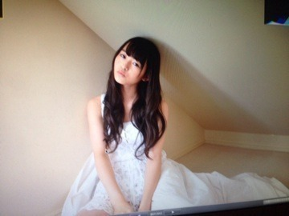
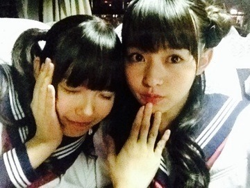

| 2013/12 03 Tue | 袖の中に小人を発見 。522回目 |

ハンバーガーどーん
いえーすアメリカーン
ジャケ写の撮影中は
ピクルス頬張ってました。
乃木坂46オフィシャルアメブロ
46ブロ更新してあるので、
読んでねー

個人pvの感想
ありがとうございました！
感動した
というコメントが多くて
嬉しかったです。
私はみなさんがこれを見て
いろんな考えてくださったことに
感動しました...
コメント読んだあとにpv見返した！
考え方がそれぞれ違って面白い！
それと、前回の訂正で...
雰囲気に合ってるじゃなくて
雰囲気に溶け込めたらいいな
と思いました。
またひとつ学ぶことできました。
監督さんに感謝。
メモ用紙と手紙は直筆です！
くまの絵で遊んだところが
使われてて嬉しかった。
絵がちっちゃくて見えにくいけど、
こんな感じの落書きでした。
1枚目 2枚目

(再現)

ナタリーバック8グラビア第二弾の
感想もありがとう

見ていない方は↓
お気に入りの一枚はなんですか？
私はしたから撮ったロフトのすきー
あったかいオレンジの明かり。
日経エンタテインメント！
ネクストメジャー・アイドルSpecial
17人表紙だーーひゃーあ
一人ひとりのインタビューが
2ページずつ！盛りだくさんです。
こちらも見てね見てねっ
実は今テスト期間
真っ最中のひめかと私...
ひゃーあ

なんとなく、
今日一日のことを思い出してみよう。
...
......そうだな
うーん...
......
ななみがグミみたいな顔したのが
印象的な一日でした。
明日はFNS歌謡祭。
よろしくお願いします！！
まりか
コメント(329)
2013/12/03 23:06